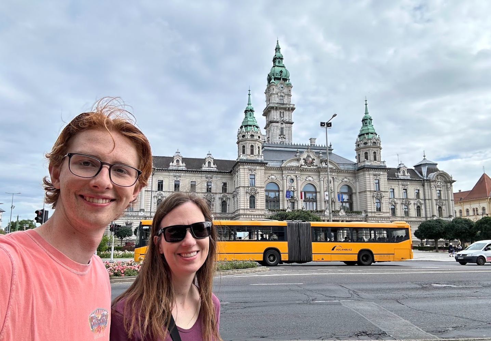
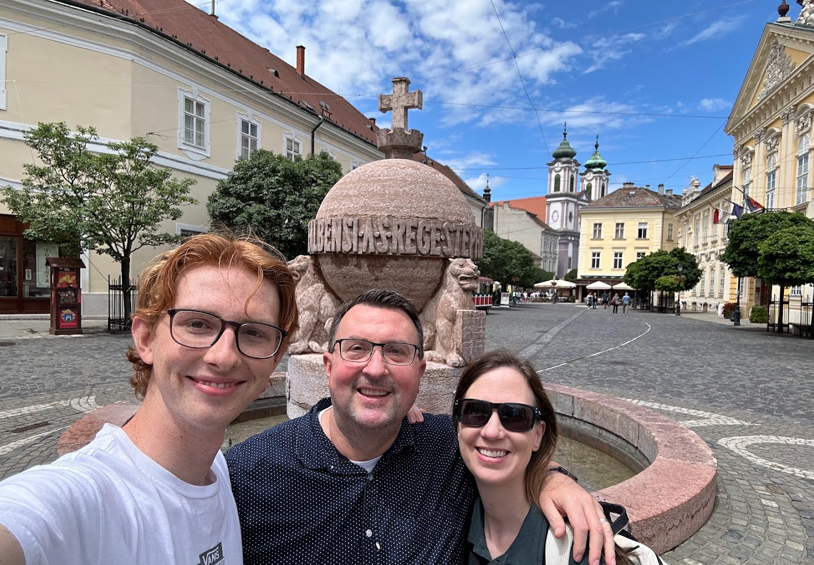
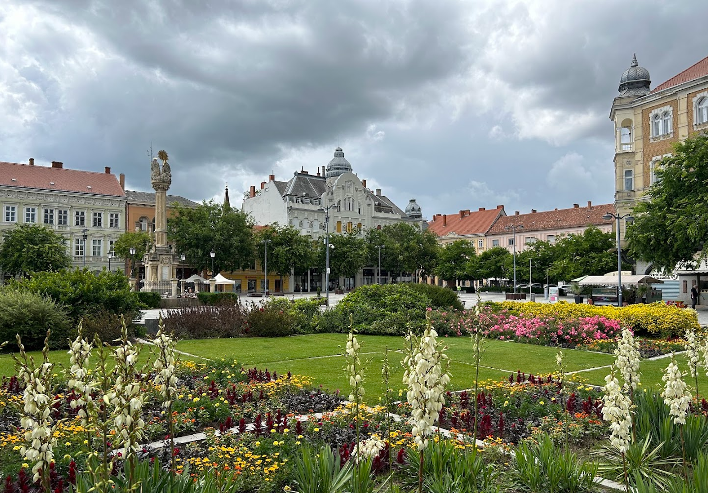
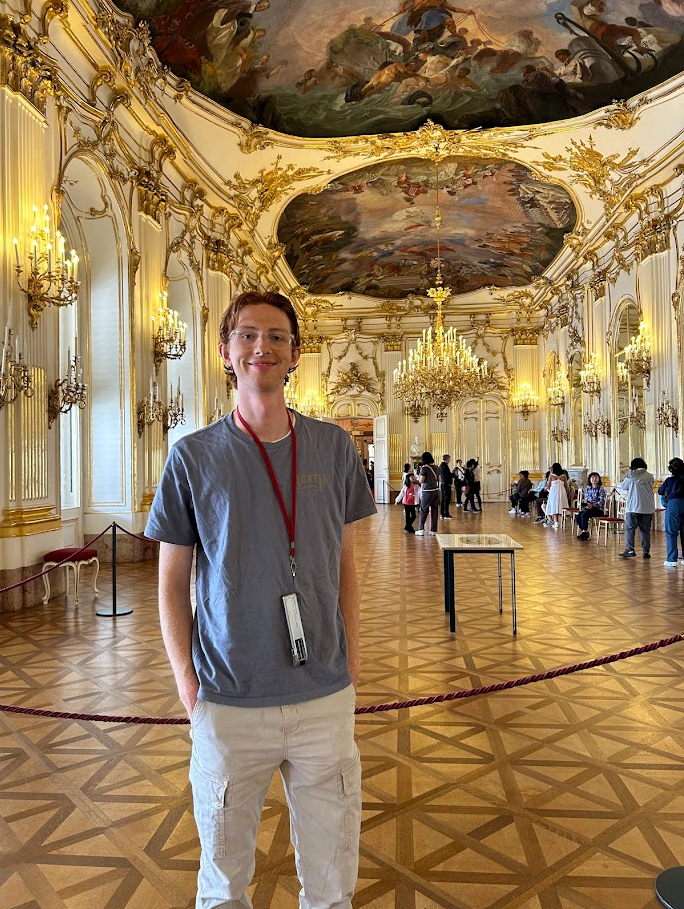
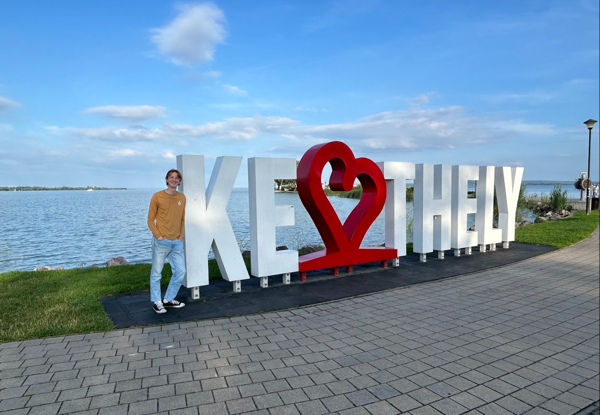
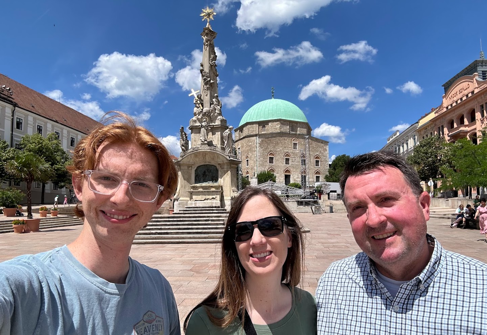
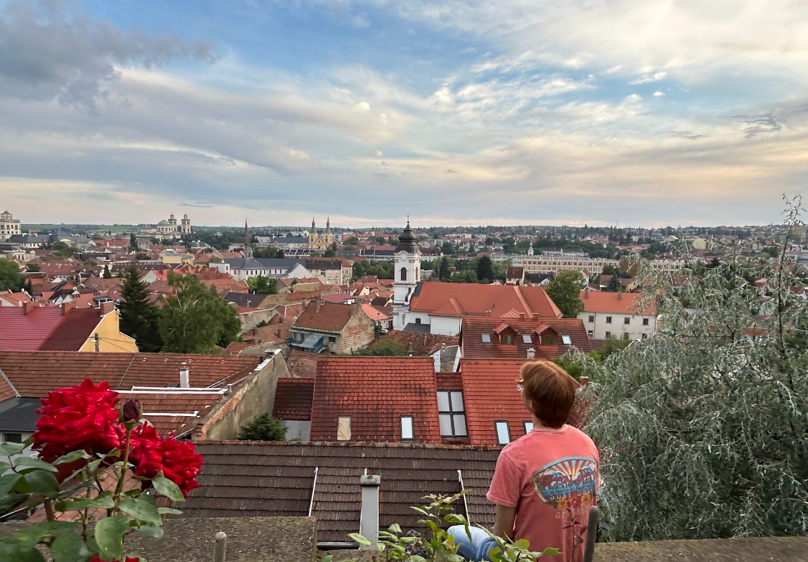
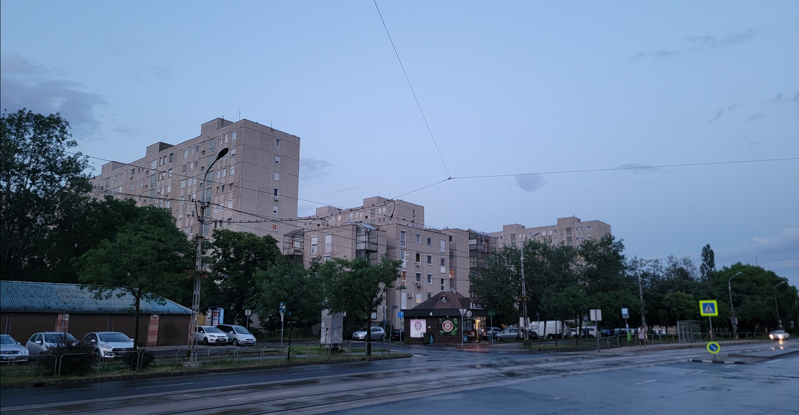

About the Trip

This past June, I had the incredible opportunity to return to Hungary, a country that holds a very special place in my heart. Having spent two years serving an LDS mission there, I had grown to love the language, the culture, and the people. Fluent in Hungarian and deeply familiar with its beauty, I wanted to share this experience with my parents. So, together, we embarked on a two-week journey to revisit the places I came to know so well and introduce them to the country that had shaped me in so many ways.
We began our adventure in Budapest, Hungary’s vibrant capital. Walking through its iconic streets, we marveled at landmarks like the Parliament Building, Buda Castle, and the stunning Chain Bridge that connects Buda and Pest. From there, we continued on to Győr, Székesfehérvár, and Szombathely, where I had the chance to reconnect with old friends and church members who were a significant part of my life during my mission. Each city brought back so many fond memories and gave my parents a glimpse of the connections I made.
Our trip also included a visit to Vienna, a short but unforgettable detour filled with rich history and charm. Back in Hungary, we explored Keszthely and the beautiful shores of Lake Balaton, often referred to as the "Hungarian Sea." We then traveled to Pécs, a city known for its unique architecture and culture, and Eger, famous for its historic castle where I also reconnected with old friends. Finally, we returned to Budapest to an are called Kispest to complete our journey.
Throughout the trip, I was able to act as a guide and translator for my parents, which made the experience even more rewarding. It was amazing to share the people, the language, and the beautiful landscapes of Hungary with them. From reconnecting with friends to visiting breathtaking sites, this trip was a perfect blend of nostalgia and discovery. Hungary continues to hold a special place in my heart, and showing it to my parents allowed me to relive those cherished moments while creating new memories together.
Destinations
Budapest

We started our trip in the beautiful capitol of Hungary and we stayed in the Hilton hotel which is on a gorgeous hill known by the locals as castle hill that looks over the Danube river. It was an absolutely beautiful location and we had a great veiw of the entire city. We were righ tnext to one of the most famous tourist sites in Hungary known as Fishermans Bastion and we were able to see so many cool and unique places including the House of Terror a museum that gives an interesting look at the horror's people had to endure under communism, The Hungarian Parliament building, the Great Market hall, Fashion Street and even a hungarian food buffet.
Győr

After Budapest we visted Győr a beatiful city about an hour west of Budapest. I never got to serve in Győr but I went there all the time on P-days as a missionary and I learned to love it's stunning picturesque streets and gothic architecture. It is truly one of the prettiest cities in Hungary and it was somwhere I knew we couldn't miss on our visit. While I was there I got to see one of the missionaries I trained and it was really good to be able to catch up with him again.
Székesfehérvár

While still staying in Győr we took a day trip to Székesfehérvár a city that I spent a large portion of my mission. We got to go and visit a lot of people near and dear to my heart and we even got to go visit a castle that is in the city. Székesfehérvár is the city where anciently hungarian kings would go to be coronated so it is a very important city to the hungarians even if now it is not as important to the country as it once was. It has a beautiful city center full of shops and vibrantly colored buildings. It is a beatiful city and I was grateful I could visit again.
Szombathely

Szombathely will always have a special place in my heart because it is where I started my mission. It was in Szombathely I started to learn hungarian and where I made my first lifelong friends in Hungary. It is a small city near the border of Austria but it still has a magical city square. We went to church in Szombathely and I was able to see so many of my old friends. I was touched by how many remebered me. We spent the day visiting my friends in the city and I can't imagine a better way to spend the day.
Vienna

We took a detour from our trip through Hungary to go see Vienna and it was an amazing city. Unfortunately I got very sick that morning so I was a little miserable the entire day but we were able to see some amazing site like a beautiful palace, the famous House of Music, and a magnificent cathederal and the catacombs that went underneath. I wish we were able to spend more time here but I was happy we had the time to stop by even if it was only for a day.
Keszthely

After we came back from Vienna we stopped at a castle and then made our way to Keszthely where we stayed for two days. It is a wonderful city that sits right on Hungary's huge lake called lake Balaton. This lake is also known as "the sea of Hungary" because it is such a popular destination for vacation within the country. It is really pretty lake and we enjoyed our time swimming and seeing some of the sites in the area. We went to a flooded cave and canoed in throug it and that was really cool. We also visited a palace that is a staple of the city.
Pécs

Pécs is a city in the far soiuth of Hungary and somewhere I never got to visit while I was living in Hungary but it was fun to go and explore somewhere new. Pécs has so many old and unique buildings and it's town sqaure has a big mosque right in the middle that sets the city apart from lots of the other cities in Hungary. There are lots of roman ruins just under the city that we got to go see and they also had lots of good restaurants and live music right in the square.
Eger

Eger may be my favorite city in Hungary. It is a really small city in eastern Hungary and one thing that instantly stands out about it is the castle that is on a hill in the middle of the city. The castle is the setting of a very famous hungarian book about how the hungarians were barely able to fend off the invading turks in 1556. Eger has an amazing city square with lots of really cool old buildings and it is the home to some of my best friends in Hungary. Going back to Eger felt like coming back home.
Kispest

We ended our journey in Kispest a small section of Budapest on the outskirts of the city. We went to church there where I reconnected with so many old friends and it was so fun. We spent the day visiting my friends before going to our hotel to stay for the night. Kispest may not be the prettiest city but it is the people there that give it so much heart.
Reflections

Returning to Hungary felt like coming back to my second home. Walking the familiar streets, hearing the beautiful Hungarian language, and soaking in the sights and smells brought a flood of memories rushing back. It was surreal to be in a place that had shaped me so profoundly. My time as a missionary in Hungary had been life-changing, teaching me resilience, empathy, and a deep appreciation for people and their stories. Being back allowed me to relive those formative experiences and reconnect with a part of myself that had grown and flourished during those two years.
One of the most meaningful moments of this trip was having my parents meet my Hungarian friends. These were the people who had welcomed me into their homes, shared their lives with me, and helped me grow in ways I never anticipated. Watching my parents interact with them was a deeply emotional experience. It was as though two worlds were colliding in the most beautiful way. Seeing the mutual respect and kindness between my family and my Hungarian friends reinforced how much these relationships meant to me. It was a moment of pride and gratitude—pride in the connections I had made and gratitude for the support and love that had carried me through my missionary work.
The reunions with old friends were joyful beyond words. Seeing familiar faces light up with recognition and exchanging stories about how our lives had changed was incredibly heartwarming. These moments helped me see the impact I had made as a missionary. Whether it was through simple acts of kindness, shared conversations, or the bonds we formed, I realized that my efforts had left a lasting impression. These reunions weren’t just about nostalgia; they were a celebration of the relationships and personal growth that had defined my time in Hungary. It was a gift to relive those memories and to feel, once again, the love and connection that had made Hungary my second home.
To learn more about me, check out my resume or my custom AI game!
More Information
Hungary is a truly amazing place and it is definitely somewhere you should visit if you ever get the chance. Below are some recomendations on where you need to go if you ever have the opputunity to visit!
My Recomendations
- Parliament (Országház) - Budapest
- Fishermans Bastion (Halász Bástya) - Budapest
- Saint Stephens Basilica (Szent István Baszilika) - Budapest
- The Great Market Hall - (Nagyvásárcsornak) Budapest
- Trofea (Hungarian Buffet) - Budapest
- While at Trofea make sure to try
- Paprika chicken
- Goulash soup
- Stuffed cabbage
- Nokedli
- Hortabagyi pancakes
- Eger Castle (Egri Vár) - Eger
- Lake Balaton Beach (Balaton Strand) - Keszthely
- Sümeg Castle (Sümegi Vár) - Sümeg
- Győr City Sqaure (Győr Belváros) - Győr
More Ideas
How Safe is Hungary?
Here is a table that helps visualize how safe Hungary is compared to other countries.